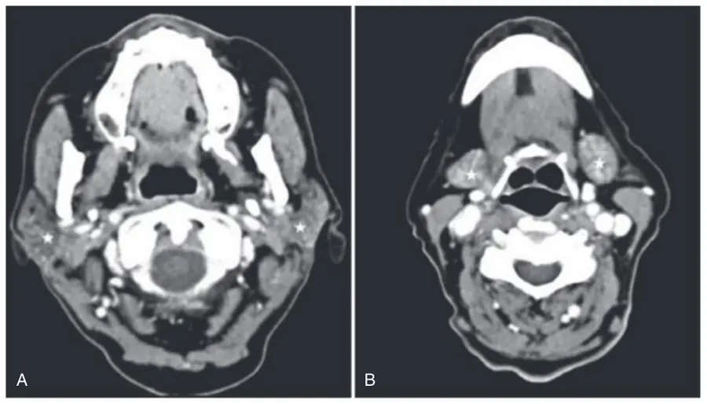
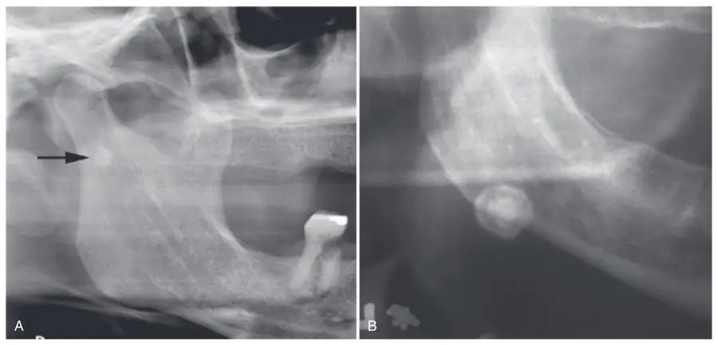

نسخه استخراجشده؛ ترجمه یا تأیید علمی انجام نشده است. وضعیت: captured
دو واژه را از همینجا جدا نگه دار: «التهاب بخش پارانشیمی غدهی بزاقی سیالادنیت نامیده میشود، در حالی که التهاب ساختارهای مجرایی سیالودوکیت یا سیالادنیت مجرایی نام دارد.»

و یک تفاوت سنی که رویکرد تو را تعیین میکند: «التهاب بهمراتب شایعترین اختلال غدد بزاقی در هم بزرگسالان و هم کودکان است، هرچند علت التهاب میان این دو جمعیت متفاوت است. در بزرگسالان، وضعیت التهابی اغلب بهدلیل انسداد موضعی پدید میآید، در حالی که در کودکان اغلب بهدلیل عفونت ویروسی است.»
و سازوکار عفونت باکتریایی حاد: «معمولاً از کاهش ترشح بزاق و در پی آن عفونت رتروگرید غدد با میکروارگانیسمهای باکتریایی دهان ناشی میشود» — بهویژه استافیلوکوکوس اورئوس، استرپتوکوکوس ویریدانس، و استرپتوکوکوس پنومونیه.
و چه کسانی جریان بزاقی کاهشیافته دارند؟ «سالمندان، بیماران در مراقبت پس از عمل، و بیمارانی که دهیدراته، دیابتی یا بولیمیکاند یا داروهایی مانند دیورتیک و ضدافسردگی مصرف میکنند.»
و چرا پاروتید بیش از همه درگیر میشود؟ دو دلیل:
و تصویر بالینی: «درگیری یکطرفه شایعتر از دوطرفه است، و نشانهی معمول مراجعه، تورم حساس هم غدهی عفونی و هم غدد لنفاوی تخلیهکنندهاش است. ترشح چرکی هم میتواند در دهانهی مجرا دیده شود.»
و روش انتخابی: «MDCT با مادهی حاجب روش انتخابی است وقتی به التهاب حاد غدد بزاقی بزرگ شک میرود.» و ویژگیهای پاتوگنومونیک: بزرگ شدن و تقویت غدهی درگیر، خطخطی شدن بافت چربی مجاور، و ضخیم شدن بافتهای زیرجلدی. و غدد لنفاوی درگیر بزرگشده و با تضعیف بالاتر از طبیعی دیده میشوند.
و چرا این ویژگیها؟ «این یافتههای تصویری بازتاب افزایش عروقرسانی و اگزودای همراه با فرایند التهابیاند.» و اگر آبسهای باشد: «به شکل نواحی خوشمرز با تضعیف پایین و تقویت محیطی» دیده میشود.
و روش دوم: «MRI روش انتخابی بعدی برای التهاب حاد است، چون در تواناییاش برای تفکیک ادم از انفیلترای التهابی بیهمتاست.» و غدد ملتهب معمولاً بزرگاند و «سیگنال پایینتر روی T1 و سیگنال بالاتر روی T2 نسبت به عضلهی اطراف» نشان میدهند. و سونوگرافی میتواند «میان التهاب منتشر و چرکی شدن» تفکیک کند.
و مهمترین ضداندیکاسیون این اسلاید: «هم سیالوگرافی و هم سینتیگرافی در موارد التهاب حاد ضداندیکاسیون دارند، چون میتوانند درد بیمار را تشدید کنند و خطر وارد کردن بیشتر ارگانیسم عفونی به درون غده را بالا ببرند.»
و درمان: رژیم آنتیبیوتیکی مناسب، همراه با بهداشت خوب دهان و افزایش مصرف مایعات. و یک هشدار: «باید مراقب بود که درمان به تأخیر نیفتد یا ناکافی نباشد، چون میتواند به تشکیل آبسهی داخلغدهای و در پی آن نیاز به درمان تهاجمیتر و مداخلهی جراحی بینجامد.»
ویروسهای متعددی میتوانند غدد بزاقی را عفونی کنند — اپشتین-بار، سیتومگالوویروس، کوکساکیویروس، ویروسهای پاراآنفلوانزا و هرپس — «ولی ویروس اوریون بهمراتب شایعترین است».

و پروفایل اوریون: بیماریای که «معمولاً کودکان ۵ تا ۹ ساله را درگیر میکند و از عفونت با پارامیکسوویروس ناشی میشود». اپیدمیهایش به نام «پاروتیت اپیدمیک» شناخته میشدند و «پیش از پیدایش واکسن سرخک، اوریون و سرخجه شایع بودند».
و پنجرهی سرایت را دقیق بدان: «افراد عفونی معمولاً دورهی نهفتگی ۲ تا ۴ هفتهای را میگذرانند و از ۱ روز پیش از ظهور علائم بالینی تا تقریباً ۱۴ روز پس از فروکش کردن علائم واگیردار به شمار میروند.»
و سه عدد ۷۰ و ۲۵ و ۲۵:
و آن عوارض: اپیدیدیمو-ارکیت، مننگوانسفالیت، پانکراتیت، تیروئیدیت، اووفوریت، ماستیت، و کاهش شنوایی یکطرفه.
و الگوی درگیری: «بزرگ شدن عمدتاً غدد پاروتید و درد شدید، بهویژه هنگام جویدن. بزرگ شدن یکطرفه آغاز میشود ولی اندکی پس از آن میتواند سمت مقابل را هم درگیر کند.»
و یک نکتهی کلیدی دربارهی تصویربرداری در اوریون: «یافتههای تصویری غیراختصاصیاند، و تشخیص معمولاً بر پایهی یافتههای بالینی و حضور آنتیبادیهای سرمی ضد ویروس اوریون در خون گذاشته میشود.» روی MDCT، غدد بزرگشده و با تضعیف اندکی بالاتر از طبیعی؛ و روی MRI، سیگنال T2 اندکی بالاتر از طبیعی.
و درمان: «درمان اوریون ماهیت تسکینی دارد و شامل تجویز مسکن و تببر همراه با استراحت در بستر است. ولی بهترین درمان، پیشگیری است، و واکسیناسیون قویاً توصیه میشود.»
و حالا گذر به التهاب مزمن — با یک نقشهی علتشناسی:
و همان عدد کلیدی درس اول: «دوسوم همهی موارد التهاب مزمن غدد بزاقی از انسداد مزمن غده ناشی میشود.» و علل انسداد اولیه (سنگ، تنگی، پلاگ موکوسی) و ثانویه (تروما به مجرا، ضایعهی فضاگیر) تقسیم میشوند.
و همانطور که در التهاب حاد، اصطلاحات سیالادنیت و سیالودوکیت در التهاب مزمن هم به همان معنا به کار میروند — پارانشیم در برابر مجرا.